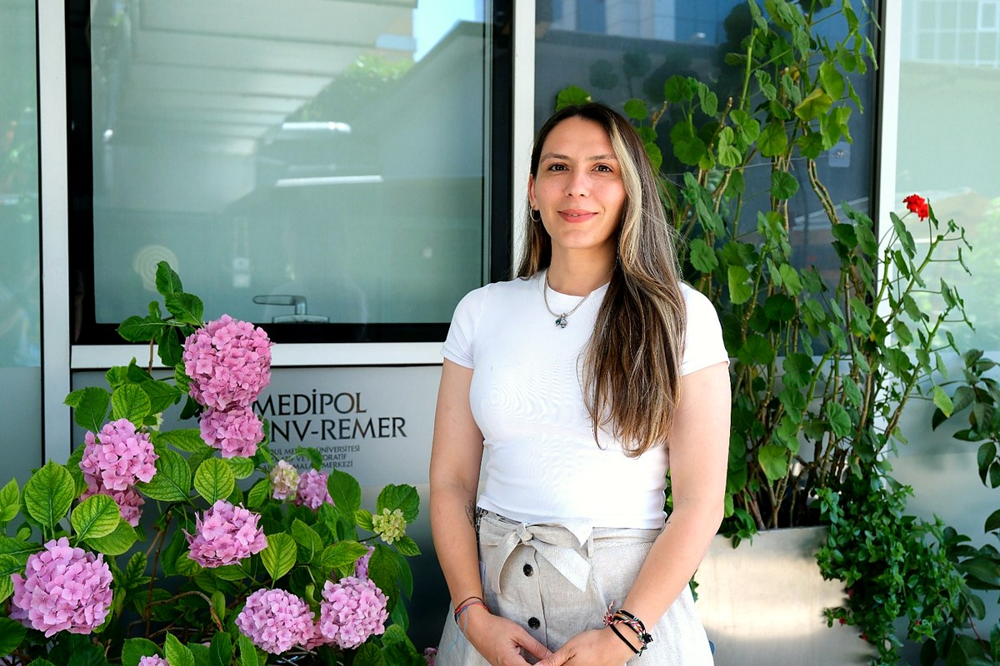

October 2026
TALK
Seminar at Sabancı University
Melis will present the group’s research in Sabancı University’s Graduate Seminar Series.
Melis will present the group’s research in Sabancı University’s Graduate Seminar Series.
Berat Tektaş joins our team as a master’s student. We are delighted to welcome him and look forward to working together!
Mert Mestçi joins our team as an undergraduate researcher. We are delighted to welcome him and look forward to supporting his research journey!
Led by Dr. Melis Dilara Arslanhan Gül, the ODyS Lab is established at the Research Institute for Health Sciences and Technologies (SABITA), Istanbul Medipol University. We investigate centrosome and primary cilium dynamics and their roles in cellular signaling, differentiation, and disease.
